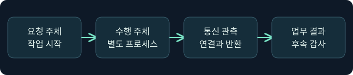

분리 실행과 프로세스 감사 증거
프로세스 계보·스레드·파이프·이미지 로드를 시간선에서 대조합니다.
1. 작업을 요청한 프로세스와 수행한 프로세스를 분리합니다
가상의 문서 분류 도구가 별도의 작업 프로세스를 실행합니다. 도구는 요청을 보내고, 작업 프로세스가 분류 결과를 돌려줍니다. 사용자 눈에는 한 작업이지만 보안 기록에는 프로세스 생성, 통신, 모듈 적재가 서로 다른 시간에 나타납니다. 어느 기록이 요청자, 수행자, 반환 경로를 보여 주는지 구별해야 합니다.
Cobalt Strike 문서에서 설명하는 분리 실행도 조사 관점에서는 비슷한 질문을 만듭니다. 어떤 경우에는 실행 문맥이 별도 프로세스에 있고, 결과가 다른 통신 경로로 돌아옵니다. 이 강의는 승인된 사후 자료를 읽는 방법에 집중합니다. 작업 프로세스 생성, 메모리 주입, 통신이나 스크립트 실행을 재현하지 않았습니다.

2. 프로세스 계보에 사건의 맥락을 붙입니다
프로세스 트리는 누가 어디에서 실행됐는지 묻는 출발점입니다. 정상 응용 프로그램도 업데이트, 브라우저 렌더링, 미리 보기 작업을 위해 보조 프로세스를 시작합니다. 서비스의 시작 경로와 데스크톱에서의 시작 경로도 다를 수 있습니다. 이름이 익숙하다고 승인된 작업이라 판단하거나, 부모·자식 조합 하나로 위험을 단정하지 않습니다.
Sysmon Event 1에서 호스트, 생성 시각, 이미지 경로, 명령줄, ProcessGuid와 부모 필드를 검토합니다. 원시 PID는 프로세스 종료 후 재사용될 수 있습니다. Sysmon에 있는 ProcessGuid와 같은 장치의 시각을 함께 기록합니다. 다른 수집기의 프로세스 식별자를 합칠 때는 그 식별자의 범위를 확인합니다. 부모 필드만으로 실제 요청의 출처와 모든 관여 주체를 복원하기는 어렵습니다.
3. 원격 스레드와 이미지 로드의 근거를 비교합니다
| 기록 | 제공하는 단서 | 한계 |
|---|---|---|
| Sysmon 1 | 프로세스 생성 및 부모 문맥 | 내부에서 수행한 모든 작업은 별도 확인 |
| Sysmon 7 | 특정 프로세스의 이미지 로드 | 적재된 모듈의 모든 코드가 실행됐다는 증거는 아님 |
| Sysmon 8 | 한 프로세스가 다른 프로세스에 만든 원격 스레드 | 가능한 모든 프로세스 간 실행 방식의 관측을 보장하지 않음 |
| Sysmon 10 | 한 프로세스가 다른 프로세스에 접근 | 접근 요청만으로 쓰기·실행 결과를 확인할 수 없음 |
| Sysmon 17·18 | 이름 있는 파이프의 생성·연결 | 전송한 내용과 작업 결과는 별도 근거 필요 |
Sysmon의 이벤트는 설정, 버전, 필터링 범위에 영향을 받습니다. 이미지 로드는 수집량이 클 수 있고 조사 자료에 포함되지 않을 수 있습니다. Event 8의 StartModule 및 StartFunction은 추론 값이며 비어 있을 수 있습니다. 주소를 분류하려면 사건 시점의 모듈·메모리 범위가 필요합니다. 빈 필드를 실행 실패나 특정 기법의 증거로 해석하지 않습니다.
4. 파이프 생성, 연결과 내용은 다른 단계입니다
이름 있는 파이프는 프로세스 간 통신에 흔히 쓰입니다. 17은 파이프 생성, 18은 연결을 보여 줄 수 있습니다. 같은 이름의 파이프가 반복되거나 서로 다른 호스트에서 보일 수 있으므로 호스트, 시간, 관련 프로세스와 정책을 확인합니다. 생성 기록만 있으면 연결이나 응답을 확인하지 못한 상태입니다. 연결이 확인돼도 실제 데이터나 완료 여부는 그 기록의 범위를 벗어납니다.
업무 프로그램이 항상 특정 파이프 이름을 쓴다는 가정은 버전이 바뀌면 틀릴 수 있습니다. 정상 서비스와 단말의 기준선은 이름 외에 생성 주체, 연결 상대, 작업 시각과 승인된 기능을 포함합니다. 의심되는 통신을 테스트하려고 파이프나 다른 연결을 만들지는 않습니다.
5. 이미지 로드와 내용 판정을 연결할 때 주의합니다
별도 작업 프로세스에 DLL이 적재되면 그 모듈이 정상 운영, 진단, 보안 검사 중 어디에 속하는지 봅니다. 이미지 로드 기록의 서명·경로·해시와 승인 목록을 비교합니다. 이어서 앞 강의에서 배운 페이지 권한, 실제 내용의 관측과 구분합니다. 이 구분은 실행 문맥이나 모듈의 표현이 바뀔 수 있는 유형을 조사할 때 특히 중요합니다.
스크립트 검사와 이미지·메모리 감시는 같은 수집 경로가 아닙니다. 어떤 검사 기록이 보이지 않더라도 호스트 통합, 정책 및 수집 범위를 먼저 점검합니다. 분리 실행의 성공을 확인하려면 작업을 수행한 프로세스와 실제 결과가 연결되는지 별도로 확인해야 합니다.
6. 공식 Process Browser에서 가상 조사 대상을 고릅니다
실제 화면 162: Fortra Process Browser

Fortra Process Browser의 실제 화면입니다. 2026년 11월 10일 확인했습니다. 공식 캡처의 설치 버전은 확인되지 않았으며 제품 버전에 따라 메뉴와 표시가 다를 수 있습니다.
- Sessions → 승인된 가상 LAB-WORKER 한 행 우클릭 → Explore → Show Processes로 이동하는 미실행 예입니다. 호스트 하나를 고르는 이유는 같은 PID의 다른 호스트 기록을 섞지 않기 위해서입니다.
- 프로세스 트리에서 가상의
ReviewWorker.exe, PID4108행을 클릭합니다. 행 선택에는 입력 칸과 저장 버튼이 없습니다. Show Processes의 조회 동작과 반환된 표에서의 행 선택을 구별합니다. - 오른쪽 PID·PPID·Name·Arch·Session·User를 대조합니다. 결과가 비거나 오래됐으면 선택한 호스트, 조회 시각과 작업 반환 상태를 확인합니다. 전체 경로와 생성 시각은 보존된 단말 자료에서 별도로 확인합니다.
공식 사진의 값은 Fortra의 시연입니다. 가상의 조회 반환, 스레드·파이프 관측과 실행 결과의 실제 화면은 확보하지 못했습니다. 화면의 다른 작업 버튼은 이 검토에 사용하지 않았습니다.
7. 보존된 기록으로 시간선을 구성합니다
- 승인된 가상의 Sysmon 내보내기에서 장치와 시각, 수집기의 정책 범위를 기록합니다. 초기 요청자를 찾고 1에서 생성된 작업 프로세스를 구분합니다.
- 같은 장치와 수집 범위에서 7·8·10을 확인합니다. 이벤트마다 출발·대상 프로세스, 주소, 모듈 또는 접근 종류 중 실제로 있는 항목을 남깁니다.
- 17·18에서 파이프 생성과 연결 시각을 확인합니다. 이름뿐 아니라 연결에 관련된 장치와 프로세스 문맥을 비교합니다.
- 승인된 업무 감사와 종료 기록을 대조합니다. 기록이 있다고 해서 정상 업무와 무관한 행위로 판정하지 않으며, 결론을 확인된 범위까지만 씁니다.
8. 조건에 따라 어느 근거를 더 볼지 정합니다
| 가상 관측 | 가능한 해석 | 다음 근거 |
|---|---|---|
| 업무 시작 직후 작업 프로세스와 정상 산출물 | 승인된 분리 실행 후보 | 승인 시간, 부모 및 경로 기준선 |
| Event 10과 Event 8, 실행 결과 공백 | 프로세스 간 접근과 원격 스레드 관측 | 주소 범위, 권한, 후속 업무 기록 |
| Event 17만 있고 18 미관측 | 생성 근거 있음, 연결 미확인 | 18의 수집 범위와 수명 |
| 모듈 로드 기록 없음 | 해당 자료에서 적재 미확인 | Event 7 설정, 보존 범위, 스냅샷 |
작업 프로세스가 이미 종료됐다면 현재 프로세스 목록에서 사라져도 당시 로그는 유효할 수 있습니다. 같은 이름의 새 프로세스가 나타나면 시간과 식별자를 확인해 이전 관측과 구별합니다.
9. 확인된 행위와 가설을 보고서에 분리합니다
조사표에는 요청과 실행 문맥, 통신, 모듈과 결과를 독립 항목으로 둡니다. “프로세스 생성 확인, 파이프 연결 확인, 내용과 업무 결과 미확인”처럼 근거가 있는 단계만 확정합니다. 정상 기준선과 다른 기록이 여러 개 일치한다면 추가 조사 이유와 관련 정책 범위를 남깁니다.
예제는 가상이며 프로세스 생성, 주입, 파이프 통신, 키 입력 수집 및 보호 설정 변경을 수행하지 않았습니다. 도구의 업무 실행 성공이 아니라 관측을 연결하는 방법을 검증했습니다.
10. 복습과 즉시 해설
복습 1. 프로세스 트리만으로 작업 결과를 확인하나요?
해설: 실행 계보의 단서입니다. 업무 감사 및 결과 자료를 따로 확인합니다.
복습 2. PID가 같으면 시간선을 합쳐도 되나요?
해설: PID가 재사용될 수 있습니다. 호스트, 생성 시각과 가능한 경우 ProcessGuid를 확인합니다.
복습 3. Event 8이 없으면 모든 주입을 부정할 수 있나요?
해설: 원격 스레드 유형의 관측입니다. 설정과 수집 범위, 다른 증거를 확인합니다.
복습 4. Event 10은 대상에서 실제 쓰기가 일어난 증거인가요?
해설: 프로세스 접근에 관한 기록입니다. 실제 변경과 실행은 추가 근거를 봅니다.
복습 5. Event 17로 내용 전송을 확정하나요?
해설: 파이프 생성입니다. 연결과 실제 내용·결과는 각각 다른 관측이 필요합니다.
복습 6. StartModule이 비어 있으면 무슨 뜻인가요?
해설: 모듈을 추론하지 못했을 수 있습니다. 주소와 사건 시점의 매핑을 비교합니다.
복습 7. Event 7에서 서명된 모듈이 보이면 모두 정상인가요?
해설: 적재와 파일 속성의 단서입니다. 문맥, 현재 메모리와 실제 행위를 별도로 확인합니다.
복습 8. Process Browser의 현재 목록은 과거 기록과 같은가요?
해설: 조회 시점의 자료입니다. 생성·종료 기록과 사건 시점을 대조합니다.
11. 공식 자료와 확인 범위
2026년 11월 10일 공식 자료를 확인했습니다. 그림과 표는 합성 설명 자료이며 제품과 대상 실행은 미실행입니다.